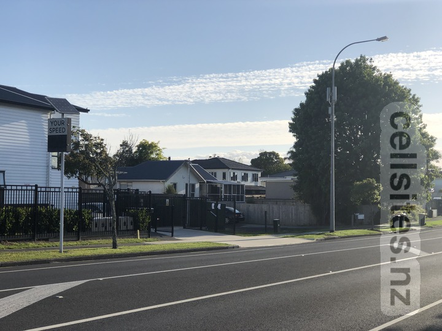
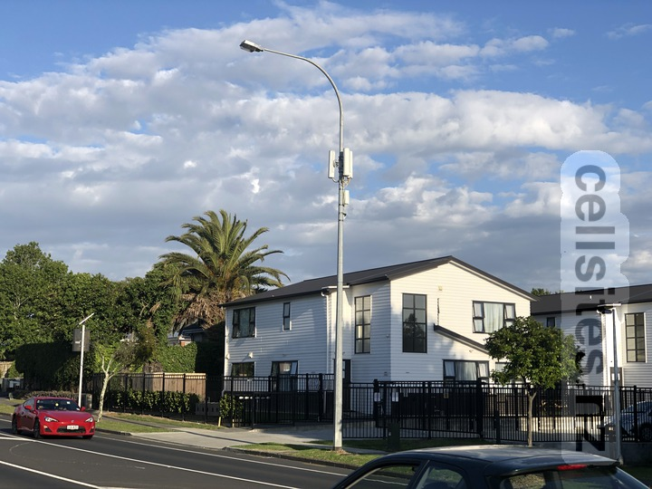
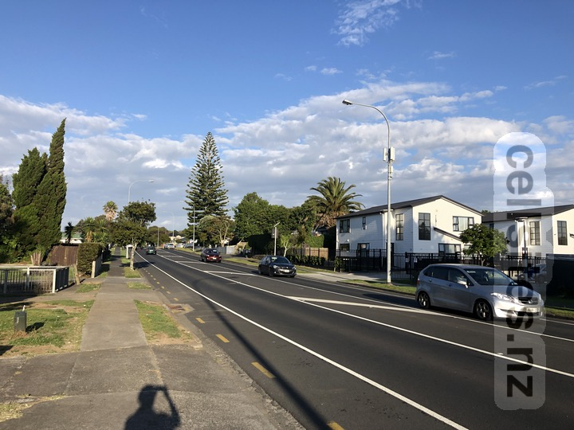
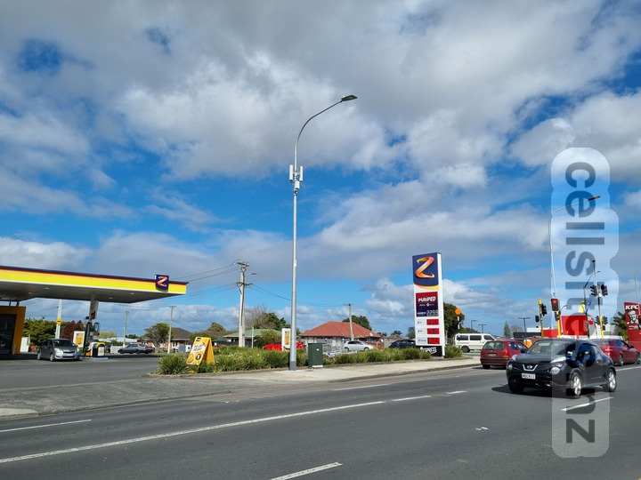

Manurewa
Cell Sites in Aotearoa
Tāmaki-makau-rau
Manurewa
2degrees Homai Central
2degrees Homai AAU
2degrees Manurewa East AAU
2degrees Homai Central
ID:
AKL-008-058
Code:
HOMC
GIS Geek
2degrees Homai AAU
ID:
AKL-008-128
Code:
HOAU
GIS Geek
  
2degrees Manurewa East AAU
ID:
AKL-008-124
Code:
MEAU
GIS Geek
